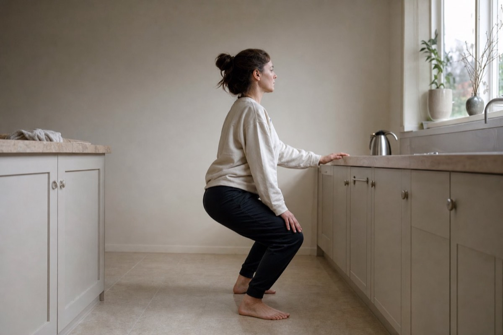
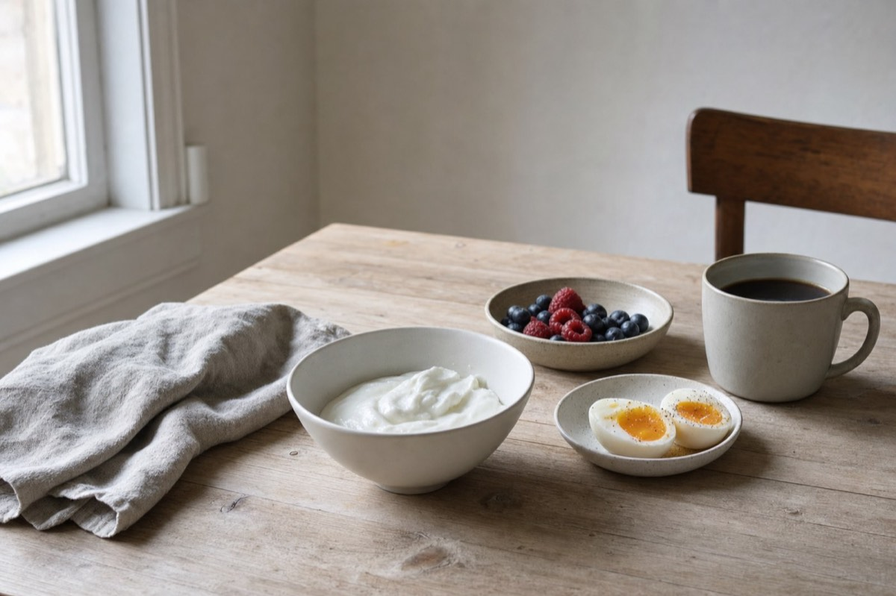

Por qué sigue pasando el bajón de la tarde, y los pequeños cambios que lo aplanan.
Catorce días. Tres cambios. Unos diez minutos al día, nada en un gimnasio.
Esto no es una dieta y no tienes que dejar nada. No vas a contar nada, pesar nada ni dejar el pan. Cada cambio aquí es algo que agregas, y dos de los tres toman menos de un minuto.
Lo que hace: estabiliza la subida y la bajada de tu azúcar en la sangre después de comer, que es lo que está debajo del bajón de las 3pm.
Lo que no hace: cambiar tu peso en dos semanas, reemplazar nada de lo que te dijo tu médico, ni funcionar los días que no lo haces. Eso último vale la pena decirlo en voz alta. Funciona los días que lo haces, y no los días que no.
Lee las dos páginas siguientes antes de empezar. Explican por qué son estos tres cambios, y saber el porqué hace que sea mucho más difícil dejarlos el cuarto día.
Ya conoces la sensación. En algún momento entre las dos y las cuatro de la tarde se te apagan las luces. Se te va la concentración, se te cierran los ojos, y se te antoja algo dulce con una fuerza que no tiene nada que ver con el hambre.
La misma tarde, sin hacer nada y con el plan. La baja es lo que te manda a buscar azúcar.
Comes. Los carbohidratos de la comida se convierten en glucosa y tu azúcar en la sangre sube. Entre más grande y más rápida la subida, más insulina manda tu cuerpo para bajarla.
La bajada se pasa. La insulina hace su trabajo y un poco más, así que una o dos horas después tu azúcar en la sangre no solo volvió a lo normal. Bajó de donde empezó.
La baja es el bajón. El azúcar baja se siente como cansancio, poca concentración y unas ganas muy específicas de algo dulce, porque el azúcar es la forma más rápida de volver a subir.
Así que te comes un snack, o un café, o los dos. Que sube rápido, baja fuerte y vuelve a caer. Ese es el ciclo, y a las 4pm ya estás metido en él.
La parte que vale la pena pensar: el bajón es lo que crea el antojo. No estás perdiendo una discusión contigo a las 3pm. Estás respondiendo a una baja que empezó en el almuerzo. Le estás pidiendo a la fuerza de voluntad que arregle algo que nunca fue un problema de fuerza de voluntad, por eso echarle más ganas no ha funcionado.
No es un defecto de carácter. Es una secuencia.
Lo que lo aplana no es comer menos. Es hacer la subida más chica y la baja menos profunda, y de eso tratan las tres páginas siguientes.
Tres cambios. Ese es todo el plan.
Lo más efectivo de esta lista, y lo que menos te pide.
Sesenta segundos. Sin equipo, sin cambiarte de ropa.
No más comida. El mismo desayuno, en otro orden, con una cosa más.
No necesitas los tres desde el primer día. Empieza con la caminata, porque es la que más trabajo hace, y agrega los otros cuando la caminata ya no se sienta como una decisión.
Cerca del final hay un calendario con catorce días y tres casillas por día. Imprímelo y ponlo donde lo veas.
Tus músculos pueden sacar la glucosa de la sangre sin esperar a la insulina, y moverlos abre ese camino. Así que una caminata corta mientras la comida todavía se está absorbiendo le quita la punta a la subida, y eso es lo que hace que la baja de después sea menos profunda.
Aquí importa más el momento que el esfuerzo. Una caminata lenta de diez minutos veinte minutos después del almuerzo hace más por tu tarde que una caminata fuerte de cuarenta minutos en la noche, porque para la noche la glucosa del almuerzo ya se fue hace rato.
Si solo cambias una cosa, que sea esta. El almuerzo es la comida que prepara tu tarde, así que si caminas después de una sola comida al día, que sea el almuerzo.

El mismo mecanismo que la caminata, solo que concentrado. El músculo en movimiento saca la glucosa directo de la sangre, y entre más músculo uses, más saca. Tus muslos y glúteos son los músculos más grandes que tienes, por eso las sentadillas están en esta lista y los abdominales no.
Las elevaciones de talón son la versión sentada, y no son una opción de segunda. La pantorrilla está hecha para trabajar horas sin cansarse, así que sigue usando tu azúcar en la sangre mucho después de que tus muslos ya pidieron parar. Si pasas todo el día en un escritorio, haz estas.
Diez así. Si diez son muchas, haz cinco. Si cinco son muchas, párate y siéntate en una silla cinco veces, y es el mismo ejercicio.
Sentado o de pie, levanta los talones para quedar sobre la parte de adelante de los pies, y luego bájalos. Treinta así, despacio. Lo debes sentir en la parte de atrás de la pierna, abajo.
Hazlas justo antes de comer, o dentro de una hora después. No a primera hora de la mañana en ayunas, porque todavía no hay nada que mover.

Aquí pasan dos cosas, y las dos se notan en la tarde.
El orden cambia la forma de la subida. La proteína y la grasa hacen más lento el paso de la comida por el estómago, así que la misma comida empezando por la proteína te da una subida más suave que empezando por el pan tostado.
La cantidad cambia cuánto tiempo te sientes lleno. Treinta gramos en el desayuno casi siempre quieren decir que no andas buscando algo a las once, y el snack de las once casi siempre es el que prepara la tarde.
| Desayuno | Más o menos |
|---|---|
| Tres huevos | 18g |
| Yogur griego, una taza | 20g |
| Requesón (cottage cheese), una taza | 25g |
| Batido de proteína, una medida | 20 a 25g |
| Dos huevos más un yogur | 30g |
| Avena con leche y una medida de proteína | 30g |
Casi todos los desayunos quedan en diez a quince gramos. Llegar a treinta casi siempre es agregar una cosa, no rehacer la comida.
Donde este es más débil. Tiene menos respaldo que la caminata y las sentadillas. La evidencia de que un desayuno con más proteína reduce lo que comes después es decente sin ser abrumadora, y cambia más de persona a persona. Está en la lista porque probarlo no cuesta casi nada, y porque la gente a la que le funciona casi siempre lo nota en una semana.
Si la caminata es lo único que haces, igual estás haciendo la parte que más importa.
Los tres cambios son la mitad de los hábitos. La guía de suplementos cubre lo que la gente toma: qué tiene evidencia detrás para los antojos, para el enfoque y para la energía estable, y qué no.
Aquí el trabajo de un snack es llevarte a la siguiente comida sin una subida. Eso quiere decir proteína, grasa, fibra o algo ácido, y poca azúcar.
Algunos de estos días igual se te va a antojar algo dulce a las 3pm. Cómetelo, anótalo en el diario, y sigue. Un día con una galleta sigue siendo un día que hiciste el plan.
De cinco a diez minutos después de una comida al día, y que sea el almuerzo si puedes escoger. Marca la casilla. Esa es la semana uno.
Si para el tercer día la caminata ya se siente fácil, agrega las sentadillas. Si no, déjalas. Ponerle un segundo hábito encima a uno que todavía no haces es como los planes se acaban sin que nadie se dé cuenta.
Algunas personas sienten la diferencia en los primeros días y otras no sienten nada en una semana. Las dos cosas son normales y ninguna te dice cómo te va a ir. Lo que hay que ver no es el día tres, es si las 3pm del día doce se sienten distintas a las 3pm del día uno. Para eso es el diario.
Imprime esta página y ponla donde la veas. Tres casillas por día.
C caminé después de comer · S sentadillas o elevaciones de talón · P proteína primero en el desayuno
Una línea al día. Diez segundos, y es el único registro de si esto funcionó.
Califica tu energía a las 3pm del uno al cinco, donde uno es que se te apagan las luces y cinco es que ni notas la tarde. Luego escribe qué almorzaste, en unas cuatro palabras.
Eso es todo. Sin contar calorías y nada que pesar.
Dos semanas de un número y cuatro palabras bastan para mostrarte un patrón que no sientes día a día, y el patrón es lo importante. El día catorce vas a poder ver la columna y saber si tus peores tardes vienen después de cierto almuerzo.
| Día | Energía a las 3pm, del 1 al 5 | Almuerzo |
|---|---|---|
| 1 | ||
| 2 | ||
| 3 | ||
| 4 | ||
| 5 | ||
| 6 | ||
| 7 | ||
| 8 | ||
| 9 | ||
| 10 | ||
| 11 | ||
| 12 | ||
| 13 | ||
| 14 |
Es la mitad de suplementos del mismo plan, y es más fácil leerla ahora que ir a buscarla el día nueve.
La caminata después del almuerzo, sesenta segundos de sentadillas o elevaciones de talón en algún momento del día, y treinta gramos de proteína en el desayuno.
Busca cinco días de siete. Un plan que sigues cinco días a la semana por un año le gana a uno que sigues perfecto por nueve días y luego dejas, y esta es la semana que decide cuál de los dos estás armando.
Sigue con el diario. Los números de la semana dos son con los que vas a comparar.
En la primera semana, lo normal es que la baja sea menos profunda, no que desaparezca. Menos como una pared, más como una pendiente.
En la segunda semana, lo que la gente suele notar es el antojo más que el cansancio. Las ganas de algo dulce a las 3pm dejan de sentirse urgentes, que es lo que pasa cuando la baja que las provoca se hace más chica.
Lo que no va a cambiar en catorce días. Tu peso, en ninguna forma que valga la pena medir. Tu sueño, a menos que el café de la tarde fuera lo que lo arruinaba. Nada de lo que un médico te esté tratando ahora.
Lo que esto no puede tocar. Si tus tardes son difíciles porque no estás durmiendo, o por un medicamento, o por algo médico, entonces una caminata después del almuerzo no es la respuesta, y nadie debería hacer como que sí.
Hiciste los catorce días. La caminata, las sentadillas, la proteína. Y la tarde sigue pesada.
Pasa, y casi siempre se debe a una de tres cosas.
La baja nunca fue el problema principal. Si vives con seis horas de sueño, tus tardes iban a ser difíciles de todos modos, y por más que camines después del almuerzo no vas a reponer la falta de sueño. Esta es, por mucho, la respuesta más común.
El hábito está, pero los días no. Cuatro días de catorce no es el plan, es un experimento que no se hizo. Vale la pena darle otras dos semanas antes de sacar conclusiones.
Los hábitos hacen lo que pueden, y otra cosa carga con el resto. El apetito, el ánimo, la energía y cómo tu cuerpo usa el combustible son sistemas distintos, y moverte después de comer llega a algunos y a otros no. Los antojos entre comidas, sobre todo, no son en su mayoría un problema de caminar después del almuerzo.
Esa tercera es donde cae mucha gente, y es el punto donde lo que comes y cuándo te mueves deja de ser toda la conversación.
Hay una segunda guía sobre eso. Califica dieciséis de las cosas que se venden para los antojos, el enfoque y la energía estable, y más o menos la mitad sale en Poca evidencia o Mejor no. Es gratis, y no viene en este documento.
Toca el botón de abajo y te llega por mensaje de texto.
Extracto de té verde y cromo para los antojos, cafeína y L-teanina para el enfoque, y cómo leer una etiqueta que esconde sus dosis. Gratis, y te llega directo de quien te mandó esto.
Tres cambios. Una caminata, sesenta segundos, y otro orden en el desayuno.
Nada de esto impresiona por sí solo, y por eso funciona. Aquí no hay nada en que ser bueno ni nada de que caerse, solo unas cositas que pasan justo cuando tu cuerpo está procesando una comida.
Si haces uno de los tres en las próximas dos semanas, que sea la caminata después del almuerzo.
Una cosa más, también gratis. Hay una segunda guía sobre lo que la gente toma, no sobre lo que hace: extracto de té verde, cromo, berberina, azafrán, las gomitas de vinagre de manzana, cafeína. Cada uno recibe un veredicto directo, incluidos los que no funcionan, y dice cuál es de verdad una dosis estudiada para que puedas comparar una etiqueta.
No es un link de descarga. Toca Guía de suplementos arriba en esta página y te llega por mensaje de texto.
Suerte con todo.
Esta guía es información general de salud y bienestar solo con fines educativos. No es un consejo médico, nutricional, de diagnóstico ni de tratamiento, y no es un programa para bajar de peso.
No somos médicos, nutriólogos registrados ni proveedores de salud con licencia. Este contenido no reemplaza un consejo profesional.
Habla con tu médico o con un proveedor de salud calificado antes de cambiar cómo comes o de empezar cualquier actividad física nueva, sobre todo si estás embarazada o amamantando, tienes una lesión o alguna condición médica, o tomas algún medicamento. Esto es especialmente importante si te están tratando por el azúcar en la sangre, porque los cambios en la actividad y en lo que comes pueden afectar cómo funciona ese tratamiento.
Las experiencias varían de persona a persona y no se promete ningún resultado en particular. Deja cualquier ejercicio que te cause dolor.